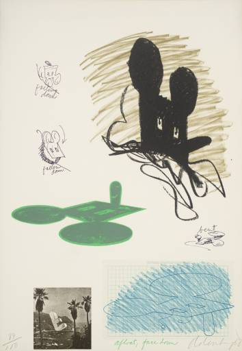
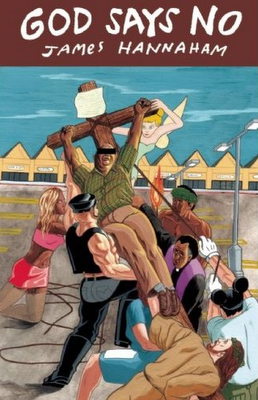

{kind=link}

Claes Oldenberg - Notes (Micky Mouse)
James, congratulations on being on the shortlist for the Green Carnation Prize. God Says No has an incredibly assured and fearless feel to it, especially for a first novel. Where did it begin?
It started out as a book about a performance group that gets mistaken for a terrorist organization. In the original story, Gary Gray, the protagonist of God Says No, was supposed to become a member of that group and get mixed up in a horrible Waco, Texas-like incident at an amusement park, but once he became the focus of the story, the section with the performance group was drastically changed and reduced and pushed into the background. Certain important elements remain, though, most notably the fact that the three sections of the book are named after terms used in mime, and the insistent idea that Gary is a sort of black gay Everyman.
There are some great twists and your protagonist, Gary, goes on a seriously unpredictable, picaresque journey. Did you enjoy taking this essentially innocent soul into such weird and wonderful circumstances?
Gary isn’t merely innocent; he’s naïve, and he makes extraordinarily bad judgments even though he thinks everything through very carefully. He denies himself everything that it’s painfully obvious he wants, especially if it brings him pleasure. Then he justifies his bad behavior with those bad judgments and slathers some Jesus on top. It’s a very American way of relating to the world: perhaps that reads as weird and wonderful to a British person, but there’s also something insane and trashy about it. I think that’s why I had such a good time putting Gary into situations with gritty, jaded people who have a much less complicated relationship to pleasure than he does—Penny, the prostitute he takes to the Dairy Queen, and Dickie, the guy he gives a blowjob in the Waffle House, even his Samoan wife Annie has a healthier way of looking at sex than Gary.
At points in the novel, performance and the writing of fiction have a powerful, compulsive but uncontrollable effect on Gary’s life. You teach Creative Writing and you’re a founder member of the Elevator Repair Service theatre ensemble – what do these things they offer us?
Essentially I wanted to suggest, subtly, that art can give us the same things we seek from religion, without the sexual repression and holy war part. Improv dance gives Gary a kind of religious conversion experience, but he doesn’t recognize it as such, and writing prose (technically it’s a memoir) allows him to put his life in some kind of context. But he’s got Christian blinders on, so it never occurs to him to see it that way.
You could have made this novel exclusively about Gary’s sexuality and his relationship with God, but you gave him a daughter – were you deliberately exploring the responsibilities of parents and teachers, and the consequences of neglect?
No, the idea was much more about “normality”—I knew some black gay men in college who I thought had achieved a kind of “regular guy” status that intrigued me. I come from an artsy, smart family made almost entirely of black sheep on both sides; we never considered “fitting in” a desirable option. I wondered if at some point these black gay men would come into conflict with their “normal” status and their identities as double minorities—what happens when your straight white friends start getting married and having families? How can you follow them there? And I think that’s why the Everyman story, a classic of silent theater, became important to the genesis of the book. I had questions about normality. I still do.
As a black gay writer, who have your role models been?
I’m surprised you could read God Says No and still put me in the “black gay writer” box. I hope it’s obvious that I’m concerned about humanity and existence as much as identity and sexuality, and in a view of the world that allows all of them to be as complicated, counterintuitive, and inappropriate as they are. So how about this list: Halldór Laxness, Yukio Mishima, Sherwood Anderson, Laurie Anderson, Toni Morrison, Luis Buñuel, Raymond Queneau, Edith Wharton, Richard Foreman, Can Xue, John Cage, Flannery O’Connor, Gustave Flaubert, Flip Wilson, Yazuso Masumura, Kara Walker, Herman Melville, Michel Foucault, Roman Polanski, Jennifer Egan, Pedro Almodóvar, Yoko Ono, Jorge Luis Borges, Meredith Monk, Marcel Duchamp, Richard Wright, Gary Hill, Reza Abdoh, Slavov Zizek, Pablo Neruda, etc. etc. etc. James Baldwin, the über-GBM writer, is someone I admire but do not attempt to emulate, because on the surface, we have too many things in common: first names, homosexuality, writing, New York metro upbringings. His birthday is the day before mine. It’s too much pressure. I am not worthy!
What would you nominate as a ‘lost Green Carnation’, a work by a gay male writer that deserves wider recognition?
Maybe Edmund White’s first novel, Forgetting Elena, though it’s gay in an oblique, esoteric fashion, or Mishima’s Forbidden Colors—but that one is so twisted.
What are you reading at the moment?
To my right there is a pile of books that includes New and Collected Poems 1964-2007 by Ishmael Reed, The Middle Stories by Sheila Heti, Squirrel Seeks Chipmunk by David Sedaris, Drinking Coffee Elsewhere by ZZ Packer, Granta 110: Sex, The Mole People by Jennifer Toth (about people who live in the NYC subway), five issues of the journal One Story, and Essays by Wallace Shawn.
As for the future, what are you working on at the moment?
I have a story collection that’s edging closer to completion, but tectonic plates have been known to move faster. It should be out around the time Hawai’i officially becomes a continent.

{kind=link}
God Says No
A novel by James Hannaham
Published by McSweeney’s Books
Epigraph: Hast thou not poured me out as milk, and curdled me like cheese? – Job 10: 10
What’s it about?
Gary Gray used to want to be a radio preacher, but the more conscious he becomes of the nature of his desires, the more he wants just to be someone else –a better husband to his wife, a better father to his daughter, and cured of homosexuality, by hook or by crook. But can Gary just walk away from it all…?
What they say
“A groundbreaking new American voice…topical and ambitious, disturbing and hilarious.” – Jennifer Egan
Opening lines:
Russ broke my Jesus, and I was mad. I don’t know where all my anger came from – my roommate must have smashed up my good manners, too. Leaping up from the bunk bed, I shoved him across the room. He stumbled away, bumped his thigh on a chair, and limped around, rubbing it. I lay back down on the lower bunk and pretended to sleep, but my blood kept boiling. A moment passed and then – surprise! – Russ dove on top of me, his muscley frame on my beanbag of a body, landing vicious punches on my kidneys.
You can buy God Says No here at Amazon.com, and James’ website is here: http://www.jameshannaham.com/